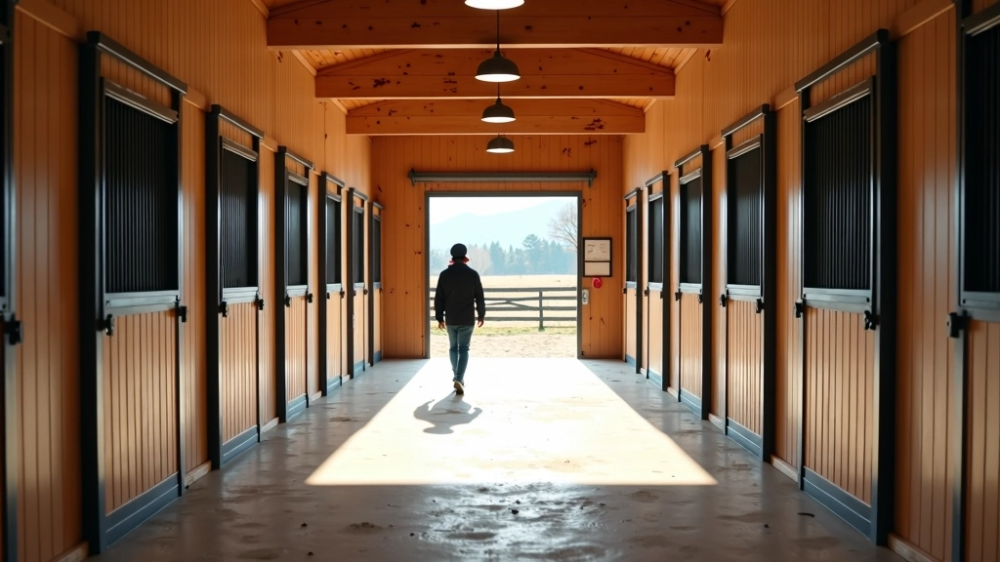
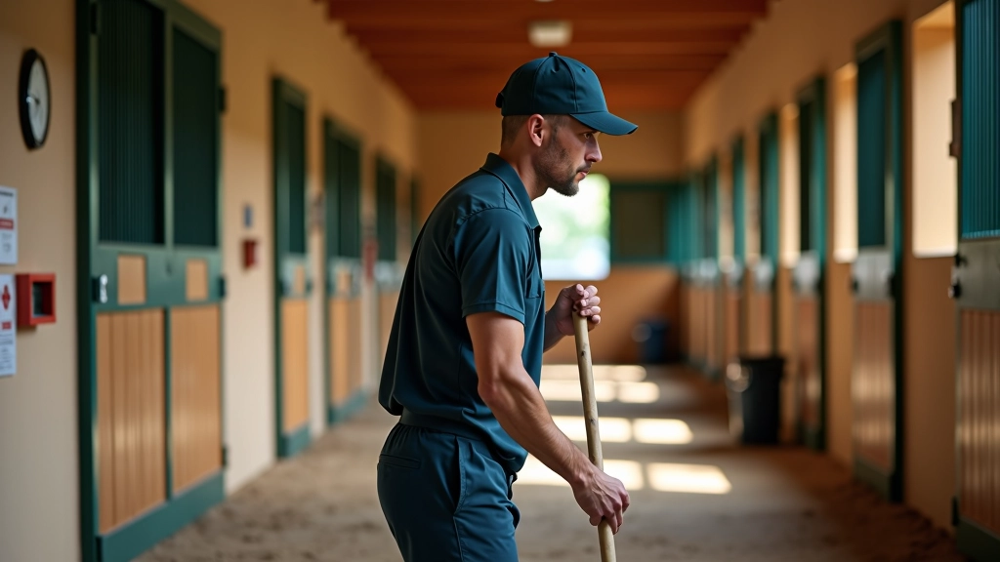
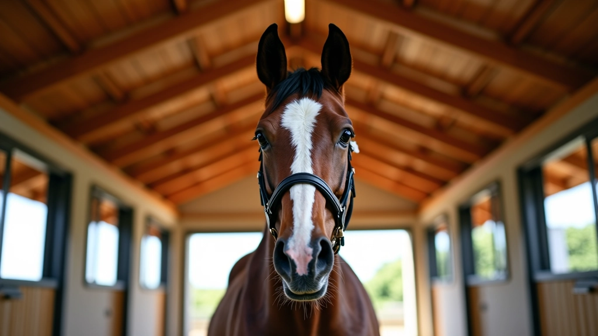
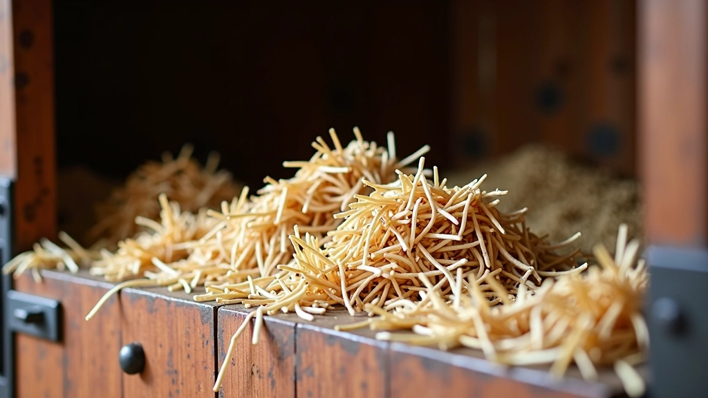

إدارة الاسطبل الفعالة
اكتشف الممارسات الأساسية لإدارة اسطبل صحي ومنظم. من التهوية إلى النظافة والتنظيم، نشرح كل ما تحتاجه لخلق بيئة مثالية لخيلك.

فريق عطايا الخيل التحريري
فريق التحرير والمراجعة
من إعداد فريق عطايا الخيل التحريري، متخصصون في تقديم إرشادات عملية وموثوقة حول رعاية الخيل والاسطبلات.
الاسطبل المنظم هو أساس صحة الخيل. ما قد يبدو بسيطاً في البداية — تنظيف الفراش وملء المياه — يحتاج فعلاً إلى نظام واضح وروتين يومي منتظم. إذا كنت تدير اسطبلاً صغيراً أو كبيراً، فإن الممارسات الأساسية واحدة.
نحن نركز هنا على ما يحدث فعلاً. لا نتحدث عن نظريات — بل عن خطوات عملية يمكنك تطبيقها من اليوم الأول. ستجد أن تنظيم الروتين يوفر الوقت والجهد على المدى الطويل.

التهوية والرطوبة أساسيان
الهواء الطازج مهم جداً. خيلك يقضي وقتاً طويلاً في الاسطبل، والهواء الراكد يؤدي إلى مشاكل صحية سريعة. تأكد من وجود فتحات تهوية في السقف والجدران — لا تحتاج إلى شيء معقد.
الرطوبة العالية مشكلة حقيقية. إذا شعرت أن الهواء رطب جداً أو رأيت تكثف على الجدران، فأنت تحتاج إلى تهوية أفضل. بعض الاسطبلات تستخدم مراوح صغيرة في الأيام الرطبة — وهذا حل بسيط وفعال.
درجة الحرارة مهمة أيضاً. الخيل يتحمل برودة معقولة، لكن الحرارة الشديدة والرطوبة معاً خطرة. في الصيف، احرص على توفير ظل وتهوية جيدة. في الشتاء، تأكد أن الاسطبل دافئ لكن مع هواء منعش.


النظافة والفراش لا تفاوضية
الفراش النظيف يحافظ على صحة الخيل. تحتاج إلى تغيير الفراش بانتظام — إزالة الأجزاء الرطبة والملوثة يومياً على الأقل. الفراش الرطب يسبب مشاكل في الحوافر والجلد بسرعة.
اختر نوع الفراش بناءً على ما يناسب احتياجاتك. القش والنشارة خيارات شائعة. بعض الاسطبلات تستخدم الحصائر المطاطية — تكلفتها أعلى لكنها تدوم أطول وأسهل في التنظيف. لا توجد إجابة واحدة صحيحة — الأهم أن تكون نظيفة وجافة.
النظافة العامة تأتي بعد الفراش مباشرة. امسح أرضيات الممرات، نظف أحواض المياه، وأزل بقايا الطعام. الاسطبل النظيف يقلل الحشرات والروائح الكريهة ويحسن الصحة العامة للخيل.
الروتين اليومي يوفر الوقت
روتين واضح يجعل كل شيء أسهل. خطط لفترات محددة للتنظيف والرعاية. البعض يفضل التنظيف في الصباح، والبعض الآخر في المساء — اختر ما يناسب جدولك. الأهم هو الاستمرارية.
قائمة فحص يومية بسيطة تساعد. تحقق من المياه — هل الأحواض نظيفة ومليئة؟ افحص الفراش — هل يحتاج إلى تغيير؟ انظر إلى الخيل — هل يبدو سعيداً وبصحة جيدة؟ هذه الفحوصات السريعة تمنع المشاكل من التطور.
التنظيم يعني توفير المستلزمات في أماكن سهلة الوصول. إذا كان فراشك ومعدات التنظيف قريبة، فستقضي وقتاً أقل في البحث عنها. تأكد من وجود مكان لتخزين العلف والمكملات — بعيداً عن الرطوبة والقوارض.
النقاط الرئيسية التي تغير الفرق
تهوية منتظمة
الهواء الطازج يمنع الأمراض التنفسية. تأكد من فتحات تهوية جيدة في السقف والجدران.
فراش نظيف جاف
غير الفراش الرطب يومياً. هذا يقلل مشاكل الحوافر والجلد بشكل كبير.
روتين يومي ثابت
نفس الأوقات كل يوم تجعل الخيل أهدأ وأكثر استقراراً.
مياه نظيفة متوفرة
الخيل يحتاج إلى ماء طازج طوال اليوم. نظف الأحواض بانتظام.
تنظيم التخزين
احفظ العلف والمستلزمات بعيداً عن الرطوبة والحشرات والقوارض.
فحوصات صحية منتظمة
راقب صحة الخيل يومياً. اكتشف المشاكل مبكراً قبل تفاقمها.
خلاصة
إدارة الاسطبل الفعالة ليست معقدة، لكنها تتطلب الانتباه والمثابرة. البدء بأساسيات قوية — تهوية جيدة، فراش نظيف، روتين يومي ثابت — يجعل كل شيء آخر أسهل.
الخيل يستجيب للبيئة التي يعيش فيها. اسطبل نظيف ومنظم يعني خيل أكثر صحة وسعادة. لا تحتاج إلى أنظمة معقدة — فقط الانضباط والاهتمام بالتفاصيل. ابدأ اليوم، وستلاحظ الفرق خلال أسابيع قليلة.
تنويه: هذا المقال معلومات عامة حول إدارة الاسطبلات وليس استشارة بيطرية متخصصة. الظروف تختلف من حالة لأخرى. إذا كان لديك مخاوف صحية محددة بشأن خيلك، يرجى استشارة طبيب بيطري مؤهل.